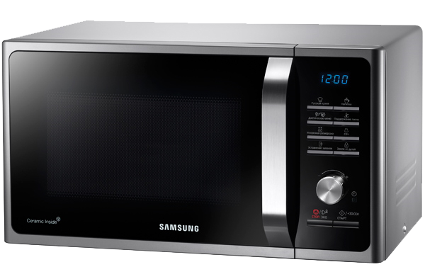

Микроволновая печь Samsung MS23F302TQS
Микроволновая печь Samsung MS23F302TQS - современная кухонная техника для приготовления пищи, которую также можно использовать для разогрева готовой еды и разморозки продуктов.
| Заводские данные | |
|---|---|
| Гарантия | 1 год |
| Страна | Малайзия |
| Серия модели | |
| Серия | MS23F302TQK |
| Габаритные размеры | |
| Габаритные размеры (В*Ш*Г) | 27.5*48.9*37.4 см |
| Объем | |
| Объем камеры | 23 л |
| Корпус | |
| Внутреннее покрытие | Bio керамика |
| Тип открывания дверцы | ручка |
| Открытие дверцы | налево |
| Микроволны | |
| Мощность микроволн | 800 Вт |
| Управление | |
| Тип управления | механич./электронный |
| Режимы работы | |
| Режимов автоматического размораживания | 4 |
| Функции | |
| Встроенные часы | Да |
| Электропитание | |
| Потребляемая мощность | 1150 Вт |
| Безопасность | |
| Защита от детей | Да |
| Цвет | |
| Цвет корпуса | серебр./черный |
| Вес | |
| Вес | 11.5 кг |
АВТОМАТИЧЕСКОЕ РАЗМОРАЖИВАНИЕ ПРОДУКТОВ
Микроволновая печь выполняет быстрое размораживание мяса, рыбы и полуфабрикатов, при этом продукты не теряют питательности и вкуса, их структура не разрушается. Предусмотрено четыре режима размораживания.
ЭЛЕКТРОННОЕ УПРАВЛЕНИЕ
Система электронного управления не потребует много времени для того, чтобы в ней разобраться, она проста и интуитивно понятна. Для удобства владельца предусмотрен информативный дисплей.
ЗАЩИТА ОТ ДЕТЕЙ
Воспользуйтесь специальной блокировкой, и ребёнок не сможет включить микроволновую печь в ваше отсутствие или вмешаться в процесс работы уже включённой печи.